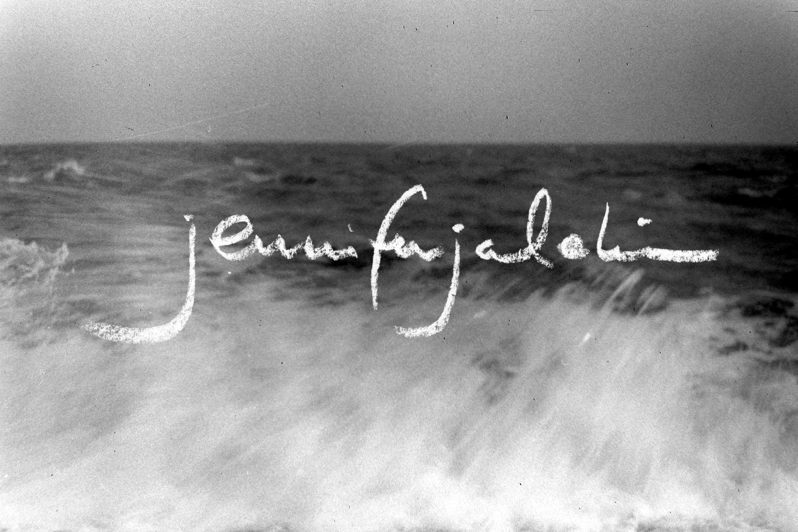
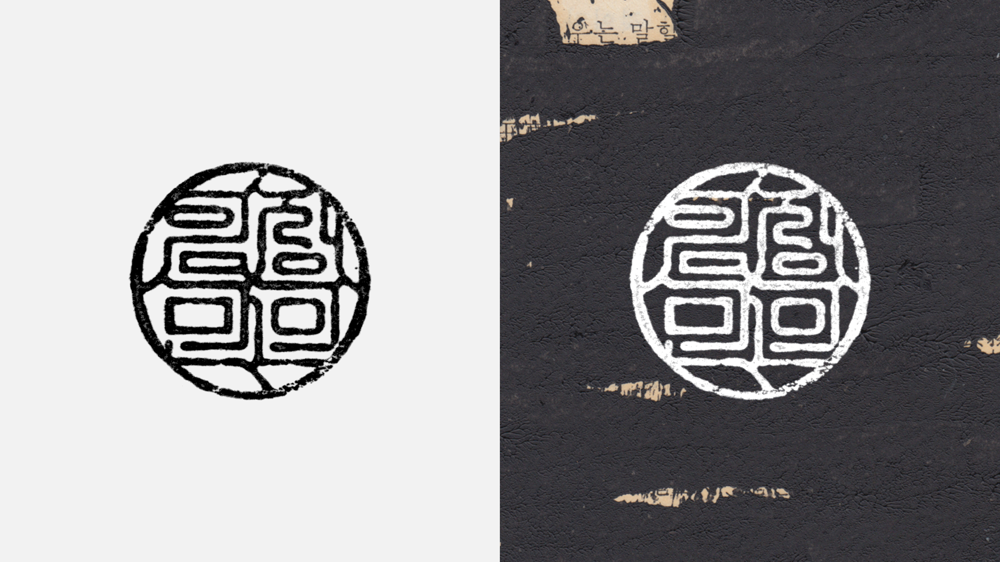
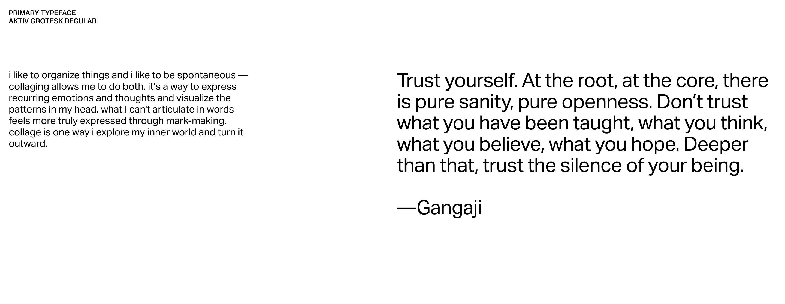
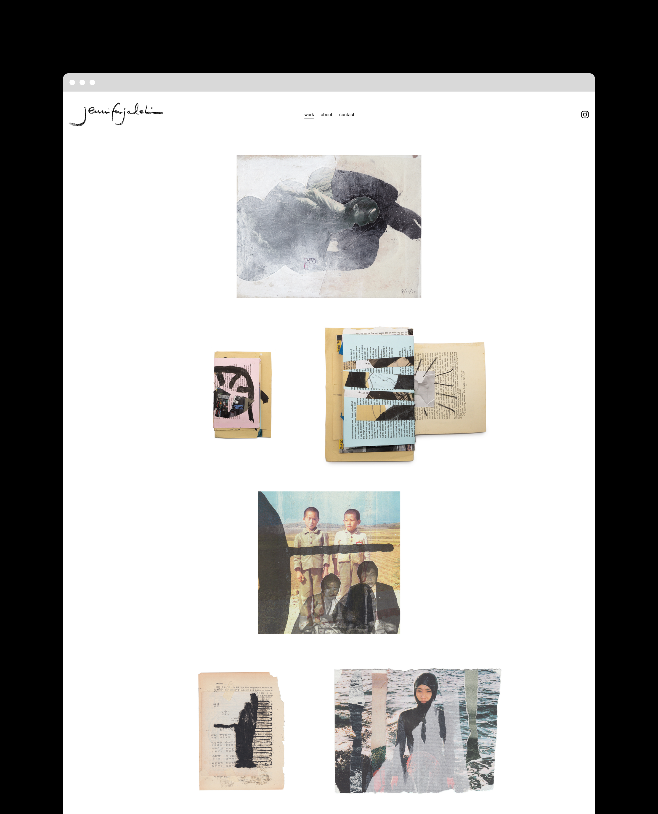
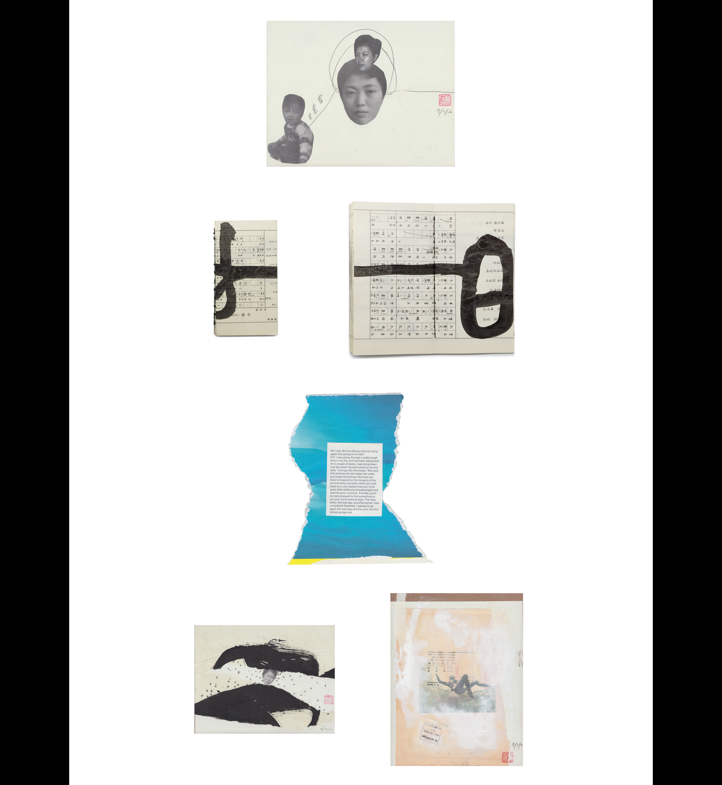
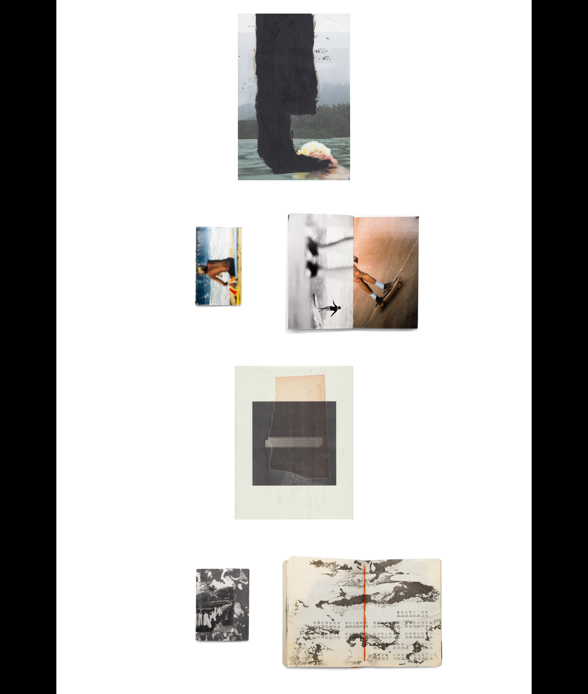
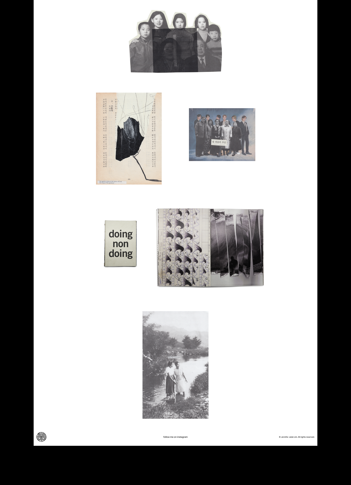
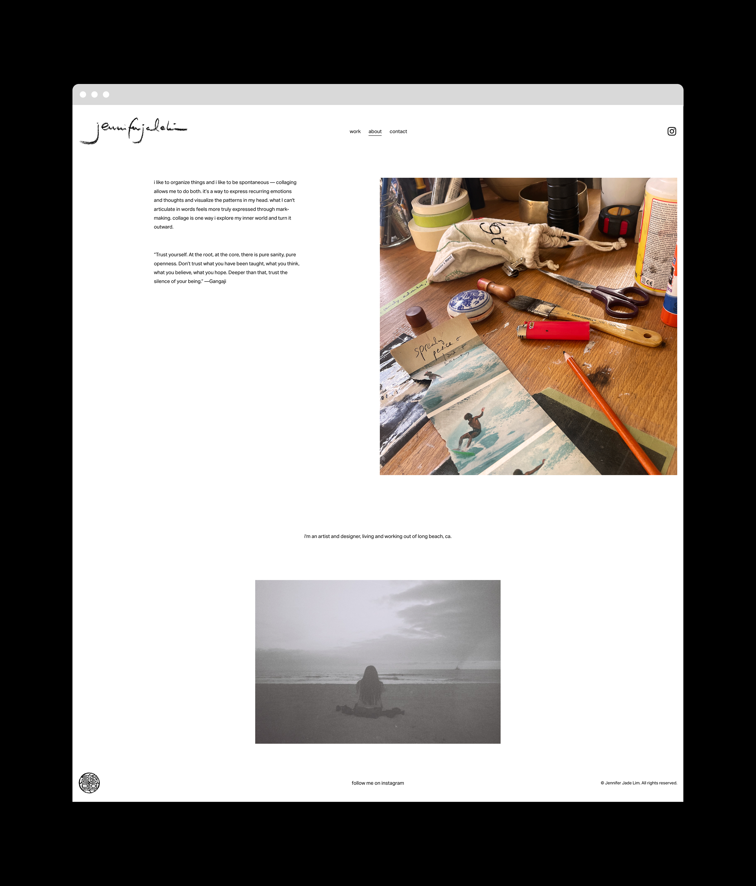
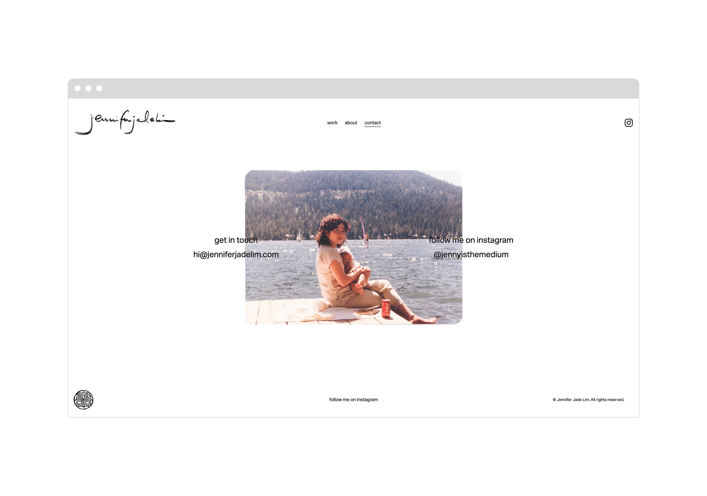
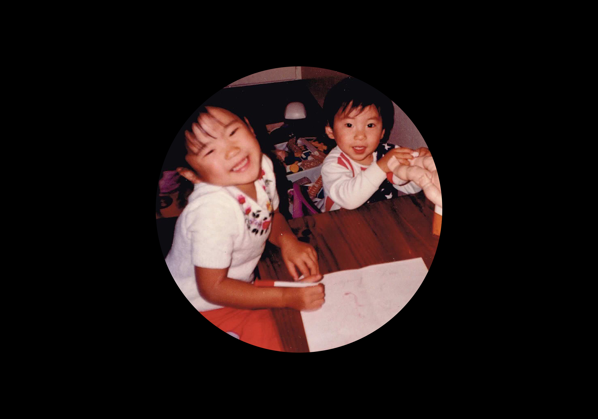

i'm a korean-american artist and designer based in long beach, ca. my work explores identity, intuition, and expression beyond expected boundaries. i'm drawn to simple, primal forms and symbols like the sea, rural korea, haenyeo, and calligraphic mark-making.
over the past few years, i've been building a more personal practice alongside my design work. i journal daily and make space to create, following what feels true.
with my husband, i built my website as a quiet foundation to share the work. together we shaped a simple identity and space that reflects how i think and make, and allows the work to grow naturally.
client: me :)
art director: jennifer merrell
creative director: jesse merrell









